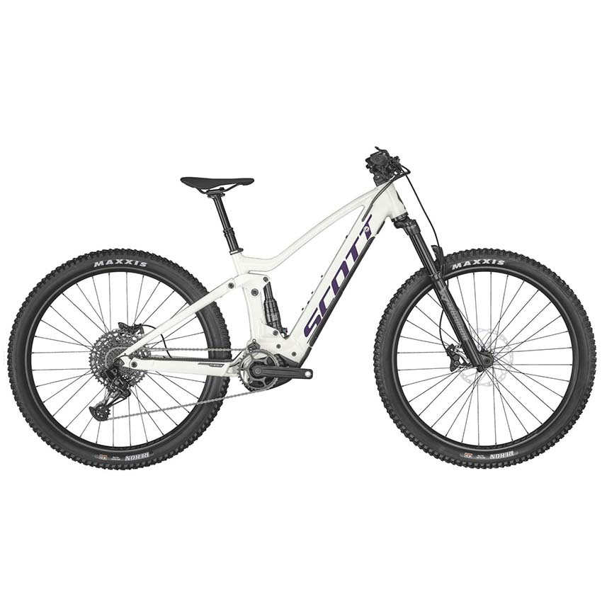

"BikeShop: Pedaleando contigo hacia nuevas aventuras. üö¥‚Äç‚ôÇÔ∏è‚ú®"
SCOTT SCALE 910 AXS 24
Características Principales
Cuadro Scale en carbono HMF
FOX 32 SC Performance 100 mm
Control remoto RideLoc con 3 posiciones
SRAM AXS Eagle 12 velocidades
Frenos de disco Shimano SLX
Aros Syncros X-25 TR
Gomas Schwalbe Racing Kevlar
Componentes Syncros
RD$150,000
SCOTT CONTESSA STRIKE E-RIDE 920
Características Principales
Cuadro de aleación Strike eRIDE
Suspensión Marzocchi Z2 Air 140 mm
X-Fusión Nude, 140 mm, TwinLoc
SRAM SX-NX Eagle 12 velocidades
Bosch CX, hasta 1000 Wh, PowerTube
Frenos de disco con 4 pistones Shimano
Cubiertas Maxxis Rekon
Dropper y componentes Syncros
Cable de luces Bosch preinstalado D+T
RD$190,000

Scott Aspect 970
Características Principales
Cuadro de aleación Strike eRIDE
Suspensión Marzocchi Z2 Air 140 mm
X-Fusión Nude, 140 mm, TwinLoc
SRAM SX-NX Eagle 12 velocidades
Bosch CX, hasta 1000 Wh, PowerTube
Frenos de disco con 4 pistones Shimano
Cubiertas Maxxis Rekon
Dropper y componentes Syncros
Cable de luces Bosch preinstalado D+T
RD$90,000
Scott SCALE 940
Características Principales
Cuadro Scale en carbono HMF
Suspención RockShox Judy 100 mm
Control remoto RideLoc con 2 posiciones
SRAM NX-SX Eagle, 12 velocidades
Frenos de disco Shimano
Aros Syncros X-25
Cubiertas Schwalbe Rapid Rob
Componentes Syncros
RD$165,000
Scott SCALE 960
Características Principales
Cuadro Boost de aleación 6061 Scale
Suspensión FOX 32 Float Rhythm 100 mm
Control remoto RideLoc con 3 posiciones
SRAM NX, 12 velocidades
Frenos de disco Shimano
Aros Syncros
Gomas Maxxis Rekon Race
RD$300,000
Scott SCALE 960
Características Principales
Cuadro de aluminio Strike eRIDE
Suspensión Marzocchi Z2 Air 140mm
X-Fusión, 140 mm, control TwinLoc
Transmisión SRAM SX-NX Eagle, 12 velocidades
Motor Bosch CX, hasta 1000 Wh, PowerTube
Frenos de disco Shimano de 4 pistones
Gomas Maxxis Rekon
Dropper y sillín Syncros
Cable de iluminación Bosch preinstalado Delantero y Trasero
RD$250,000